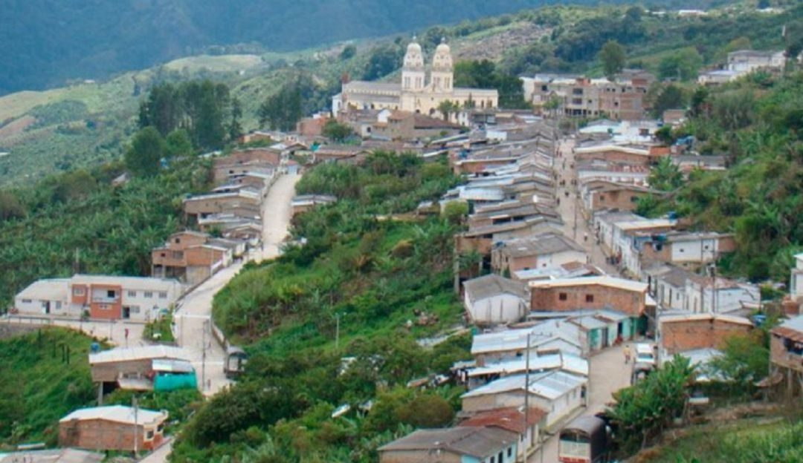
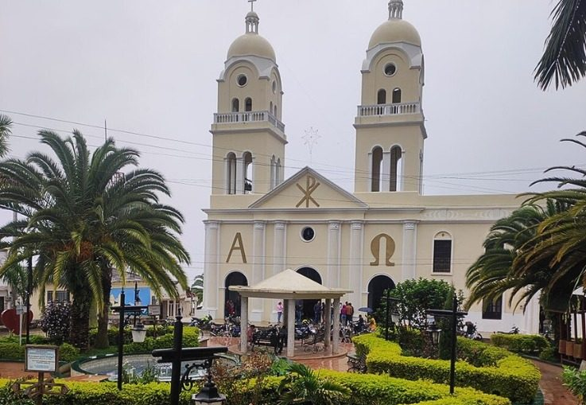

La historia de un hijo de campesinos desplazado del Catatumbo que se volvió ingeniero entre dos crisis económicas, contada para entender qué tan posible era la movilidad social a través de la educación pública en la Colombia de fin de siglo.
Hacia 1984, en plena crisis económica de los ochenta, un niño de 9 o 10 años llegó a Cúcuta con su familia, huyendo de la violencia en el Catatumbo. Dieciséis años después, el 7 de diciembre de 2000, se graduó como ingeniero civil de una universidad pública, con el desempleo en su punto más alto tras la peor crisis económica del siglo XX colombiano. Ese niño es mi papá, Wilmar Coronel Gómez.
Este sitio reconstruye su trayectoria para preguntarse qué tan excepcional fue ese camino y qué lo hizo posible. Combina su testimonio con microdatos del censo de 2018, series macroeconómicas y fuentes de la época para contrastar su experiencia con la de su generación en San Calixto, en el Catatumbo, en Norte de Santander y en el país. El hilo es económico: dos crisis que cambiaron las restricciones de un hogar pobre, una economía de frontera que vivía del bolívar y una universidad pública que hizo que estudiar fuera una apuesta posible.
La pregunta¿Qué tan excepcional fue que un hijo de campesinos desplazado del Catatumbo se convirtiera en profesional entre dos crisis, y qué condiciones económicas e institucionales lo hicieron posible o difícil?
La familia llegó a Cúcuta en medio de la crisis de los ochenta. El año en la calle y la entrada a la universidad coincidieron con los mejores años de la década. Y el grado llegó justo después de que la economía se contrajera por primera vez en décadas, con el desempleo en su punto más alto.
Wilmar Coronel Gómez, mi papá, nació el 29 de diciembre de 1974 en San Calixto, un municipio de montaña del Catatumbo. Fue el cuarto de siete hermanos. Mi abuelo era capataz en una finca ajena, de don Andrés, donde se cultivaba café, maíz y arroz; mi abuela cocinaba para los trabajadores y para la familia. En tiempo de cosecha, mi abuelo y don Jairo, un amigo suyo, llevaban la cosecha a vender a Ocaña en el camión de don Jairo. El dueño le pedía una cuota, y si mi abuelo lograba vender más caro, ganaban «un poquitico más».
La vida en la vereda muestra lo poco que llegaba el Estado. No había acueducto y se usaba letrina. La luz era muy básica. La escuela quedaba en el pueblo, a hora y media a pie o en burro. El hospital del pueblo tenía una enfermera jefe y auxiliares, pero no médico: el doctor rotaba entre pueblos, y para algo grave había que ir a Ocaña, a seis horas. Mis abuelos estudiaron hasta tercero o cuarto de primaria y leían con dificultad.
Desde finales de los años setenta había guerrillas en el Catatumbo. El ELN se tomó Convención en 1979, el EPL tenía presencia esporádica en San Calixto, Teorama y Hacarí, y a mediados de los ochenta llegaron las FARC. En esos años hubo muchas muertes y desplazamientos en la región (CNMH, 2018). Hacia 1984, cuando mi papá tenía 9 o 10 años, la guerrilla se metía en las fincas para obligar a la gente a sembrar los cultivos que ella imponía, y en el pueblo había muertos y enfrentamientos. La familia completa, padres e hijos, se fue a Cúcuta.
Esquema de Norte de Santander con los 11 municipios del Catatumbo considerados en este trabajo (zona sombreada) y la ruta por carretera de San Calixto a Cúcuta, por Ocaña, Ábrego y Sardinata. Las posiciones de los municipios son aproximadas.
La escuelita quedaba en el pueblo, y como vivíamos en la finca, nos tocaba caminar una hora y media, o era en burro.
Wilmar Coronel Gómez, entrevista de noviembre de 2026
Se metía la guerrilla a la finca a forzar a la gente a cultivar lo que cultiva la guerrilla. Prácticamente eso fue lo que nos sacó de San Calixto.
Wilmar Coronel Gómez, entrevista de noviembre de 2026


¿Qué tan atrás quedaba San Calixto en educación? El censo de 2018 pregunta en qué municipio nació cada persona, así que permite seguir a la generación de mi papá (nacidos entre 1970 y 1978) desde su lugar de origen, vivan hoy donde vivan. De los nacidos en San Calixto en esos años, el 67 % no pasó de la primaria; en el país, la cifra es 33 %. El punto de partida de mi papá estaba muy por debajo del promedio colombiano.
Esa distancia no es solo la del campo frente a la ciudad. Safford y Palacios (2002) explican cómo la geografía fragmentó a Colombia en regiones mal conectadas con el centro y con un Estado débil en la periferia. El Catatumbo, montañoso, fronterizo y en disputa armada, es un caso extremo de esa fragmentación.
Lecturas del curso: Safford y Palacios (2002).
La familia llegó a Cúcuta en plena crisis de los ochenta. Esa crisis vino después de la gran bonanza cafetera de la segunda mitad de los setenta (Caballero, 1987) y tuvo dos frentes: la crisis de la deuda latinoamericana de 1982, que cerró el crédito externo, y una crisis financiera interna que obligó al Estado a intervenir varios bancos (Caballero y Urrutia, 2006; Ocampo, 2023). El ajuste de 1984 y 1985 aceleró la devaluación del peso: un dólar pasó de 101 a 194 pesos entre 1984 y 1986.
Cúcuta, además, recibió un golpe propio. El 18 de febrero de 1983, el «Viernes Negro», Venezuela abandonó su tasa de cambio fija y creó un sistema de cambios diferenciales (RECADI), que duró hasta 1989. En la frontera, el bolívar pasó de valer 14,1 pesos en 1982 a 7,8 a finales de 1983; descontando la inflación de los dos países, perdió la mitad de su valor frente al peso. A mediados de los setenta, las ventas a venezolanos eran cerca de un tercio de las ventas de Cúcuta, y en 1983 las ventas del comercio de la ciudad cayeron 54 % (Barrera, 1989).
La familia se instaló en el barrio Antonia Santos, en la casa de mi bisabuela, porque allí estaba la familia de mi abuela. Esa fue la razón para escoger Cúcuta y no otra ciudad. Los primeros años vivieron de los ahorros y de las deudas que mi abuelo iba a cobrar a San Calixto. Uno o dos años después, con el pago de una deuda grande, compró una casa con espacio para un local y montó una tienda. Mi abuelo tenía claro que no quería trabajar para nadie más: quería su propio negocio.
La tienda funcionaba gracias a la frontera. Todo lo que vendían lo compraban en Ureña, del lado venezolano, donde «todo salía súper barato». Eso tiene una explicación macroeconómica: el mismo bolívar débil que golpeaba a los comerciantes que vivían de los compradores venezolanos abarataba, en pesos, lo que se compraba al otro lado.
El bolívar se desplomó dos veces frente al peso: después del Viernes Negro de 1983 y entre 1994 y 1996, con la crisis bancaria venezolana. Cuando la familia llegó, en la frontera valía 8,8 pesos, casi 40 % menos que en 1982, y a finales de 1986 apenas 5,7. Son pesos corrientes: las cifras no descuentan la inflación.
Cómo leerla: la línea «Mercado de frontera» (1980–1986) es la serie de Fedesarrollo publicada por Barrera (1989); desde 1983 son valores de fin de año. La línea «Tasa oficial unificada» (1989–2000) divide la tasa oficial del peso entre la del bolívar; desde marzo de 1989 Venezuela unificó su tasa y la dejó en manos del mercado. Para 1987 y 1988 no hay una serie comparable. En 1994 y 1995 hubo control de cambios en Venezuela, así que en esos años la tasa oficial sobrevalora el bolívar. Pase el cursor sobre las líneas para ver cada año.
Todo lo que vendíamos en la tienda lo comprábamos en Ureña. En Ureña todo salía súper barato.
Wilmar Coronel Gómez, entrevista de noviembre de 2026
Aquí el testimonio y los datos muestran dos caras de la misma devaluación. Para el comercio que vivía de los compradores venezolanos, la caída del bolívar fue un golpe (Barrera, 1989). Para mi familia, desplazada y sin tierra ni empleo formal, el mismo choque abarató la mercancía y sostuvo la tienda: la frontera ofrecía una salida en el comercio informal de productos venezolanos. De fondo está otra idea de Safford y Palacios (2002): Norte de Santander ha estado más integrado con Venezuela que con el centro del país, así que en Cúcuta lo que pasa con el bolívar pesa tanto como lo que se decide en Bogotá.
Lecturas del curso: Caballero (1987); Caballero y Urrutia (2006); Ocampo (2023); Safford y Palacios (2002).
Mi papá estudió en el Colegio Municipal de Bachillerato de Cúcuta, un colegio público, y fue uno de los mejores estudiantes. Desde el colegio trabajaba de vez en cuando como vendedor ambulante. Al graduarse se dedicó un año entero a vender: compraba en Venezuela cepillos, crema dental, Maltín Polar y lo que encontrara a buen precio, y lo vendía a pie, gritando, por las calles de Chapinero, Antonia Santos y Atalaya. A los venezolanos no les vendía: les compraba.
Yo me recorría todas las calles de Chapinero, Antonia Santos, Atalaya, todo eso lo recorría andando y gritando, vendiendo. Así es que yo me rebuscaba.
Wilmar Coronel Gómez, entrevista de noviembre de 2026
A los venezolanos yo solo les compraba. Cogía las cosas, las compraba en Venezuela y las traía para Cúcuta a venderles a los cucuteños.
Wilmar Coronel Gómez, entrevista de noviembre de 2026
Recuerda que se ganaba entre 1.500 y 2.000 pesos al día. Si trabajaba 26 días al mes, eso daba entre 39.000 y 52.000 pesos mensuales: entre el 48 % y el 64 % del salario mínimo de 1993, que era de 81.510 pesos (Decreto 2061 de 1992), y sin prestaciones ni seguridad social. Esa es la cara de la informalidad: entrar es fácil, pero se gana menos. Aun así, lo ahorraba todo, porque en su casa no le cobraban la comida. En un año de trabajo pudo reunir, en una cuenta aproximada, entre 468.000 y 624.000 pesos, entre 5,7 y 7,7 salarios mínimos mensuales de la época.
Estudiar tiene un costo de oportunidad: renunciar al ingreso de la calle a cambio de uno futuro e incierto. En 1993 ese costo era alto, porque la economía creció 5,4 % y el desempleo bajó a 7,8 %, el nivel más bajo de la década. Pero el auge también le permitió ahorrar, y para un hogar sin acceso a crédito eso pesó más: el año en la calle fue la forma de financiar la universidad. Su padre le decía que no estudiara, pero mi papá lo tenía decidido desde el colegio: un año vendiendo y después, ingeniería civil.
Era, además, una economía que cambiaba de reglas. Con la apertura de 1990–1991 y la Constitución de 1991, Colombia redujo sus aranceles, le dio independencia al Banco de la República y amplió el gasto social (Junguito, 2016). La Ley 30 de 1992 reorganizó la educación superior, reforzó la autonomía de las universidades públicas y ató los aportes del Estado a esas universidades, como la UFPS, a crecer cada año en pesos constantes desde 1993 (artículo 86). Eso ayuda a entender que, para mi papá, la matrícula no fuera la carga principal.
Lecturas del curso: Junguito (2016).
Wilmar sacó 380 de 400 en el ICFES, el mejor puntaje de su colegio, y entró a estudiar Ingeniería Civil en la Universidad Francisco de Paula Santander (UFPS), la universidad pública de Cúcuta, que entonces tenía prestigio en ingeniería civil. La matrícula no era la carga principal: lo caro eran las copias, los libros y los materiales. Los pagó con lo que ahorró en la calle, pero ya al año siguiente sentía que la plata se le acababa. Eso, según él, fue lo más difícil.
La universidad pública es la que me dio todo.
Wilmar Coronel Gómez, entrevista de noviembre de 2026
Si todo hubiera sido de pago, mis papás no tenían plata para pagármela. Me hubiera tocado no estudiar.
Wilmar Coronel Gómez, entrevista de noviembre de 2026
¿Qué tan raro era llegar a la universidad para alguien como él? Esta es la pregunta central del sitio, y el censo permite aproximarla.
Porcentaje de personas nacidas entre 1970 y 1978 que alcanzaron la universidad, según dónde nacieron y adónde se fueron. Mientras más periférico y rural el origen, menor la probabilidad. Los nacidos en San Calixto están en el fondo.
Cómo leerla: la línea punteada marca el promedio nacional (16,2 %). Los tres grupos que empiezan con «Catatumbo» reúnen a los nacidos en sus 11 municipios, según dónde vivían en 2018. Mi papá pertenece a dos grupos a la vez: nació en San Calixto (6,6 %) y migró a Cúcuta (9,5 %). «Llegar a la universidad» incluye a quienes la empezaron sin terminarla, así que graduarse, como él, es todavía menos frecuente.
| Grupo (nacidos ~1970–1978) | Personas | Universidad o posgrado | Cualquier educación superior | Primaria o menos |
|---|---|---|---|---|
| Colombia (total) | 4.716.130 | 16,2 % | 26,0 % | 32,9 % |
| Nacidos en Bogotá | 553.637 | 35,4 % | 50,6 % | 9,8 % |
| Nacidos en Norte de Santander | 146.768 | 14,1 % | 21,0 % | 42,3 % |
| Nacidos y residentes en Cúcuta | 35.027 | 14,8 % | 22,3 % | 28,3 % |
| Catatumbo: migraron a otro municipio | 28.332 | 12,0 % | 17,6 % | 52,6 % |
| Catatumbo: llegaron a Cúcuta | 8.617 | 9,5 % | 14,4 % | 51,2 % |
| Catatumbo: se quedaron | 18.276 | 8,6 % | 12,7 % | 60,7 % |
| Nacidos en San Calixto | 2.001 | 6,6 % | 10,5 % | 67,4 % |
«Cualquier educación superior» suma técnica, tecnológica, universitaria y posgrado. Los porcentajes se calculan sobre quienes informaron su nivel educativo. Fuente: DANE, CNPV 2018; cálculo propio.
Solo Ocaña, el centro urbano de la provincia, supera el promedio departamental. En El Tarra y Hacarí, dos de los municipios más rurales y afectados por el conflicto, menos de 4 de cada 100 llegaron a la universidad.
El acceso a la universidad creció generación tras generación. Desde los nacidos a mediados de los años cincuenta, Norte de Santander quedó por debajo del promedio del país, y la brecha fue más amplia justo en el grupo de mi papá (nacidos entre 1974 y 1978): 14,9 % frente a 17,6 %.
Los datos muestran tres cosas. Primero, el origen pesa: nacer en San Calixto reducía a menos de la mitad la probabilidad de llegar a la universidad frente al promedio del país. Segundo, migrar se asocia con más educación: los del Catatumbo que salieron de su municipio llegaron más a la universidad (12 %) que los que se quedaron (8,6 %), aunque para los que llegaron a Cúcuta, como él, la diferencia es pequeña (9,5 %). Puede ser porque la ciudad da acceso a colegios y universidades, o porque los que migran ya eran distintos; los datos no permiten separar las dos explicaciones. Tercero, aun después de migrar, los del Catatumbo que llegaron a Cúcuta quedaron por debajo de los nacidos en la ciudad (9,5 % frente a 14,8 %). Llegar a la ciudad abría la puerta, pero no la abría para todos por igual.
Detrás del promedio nacional, cuya mejora de largo plazo documentan Jaramillo-Echeverri, Meisel-Roca y Ramírez-Giraldo (2019), hay diferencias regionales grandes. Para su generación, nacer en Bogotá multiplicaba por más de cinco la probabilidad de llegar a la universidad frente a nacer en San Calixto (35,4 % frente a 6,6 %).
De los seis hermanos que sobrevivieron, cinco llegaron a la universidad. Con las tasas de su generación (6,6 % para los nacidos en San Calixto, 9,5 % para los del Catatumbo que llegaron a Cúcuta), lo esperable en seis hermanos habría sido menos de uno.
Fuente: entrevista con mi papá. Un séptimo hermano murió a los dos años.
La historia de la familia sugiere un mecanismo que los datos agregados no ven. La hermana mayor no estudió: tuvo que trabajar y encargarse de muchas cosas. Según mi papá, ver lo difícil que fue para ella, y ver que al hijo de un compañero de mi abuelo le fue muy bien estudiando ingeniería civil, convenció a los menores de que el estudio sí daba resultado. El orden de nacimiento y el ejemplo cercano también pesaron.
Mi hermana mayor no estudió, se dedicó a trabajar. Viéndola a ella vimos lo difícil que era. Entonces de ahí para abajo todos empezamos a estudiar.
Wilmar Coronel Gómez, entrevista de noviembre de 2026
Lecturas del curso: Jaramillo-Echeverri, Meisel-Roca y Ramírez-Giraldo (2019); Safford y Palacios (2002). Marco legal: Ley 30 de 1992.
Wilmar se graduó como ingeniero civil el 7 de diciembre de 2000. Un año antes, el PIB de Colombia había caído 4,2 %, la primera contracción en décadas. La construcción, justo el campo de un ingeniero civil, fue uno de los sectores más golpeados: según las cifras preliminares del DANE, cayó 24,3 % en 1999, y la construcción de vivienda, 36,4 % (El Tiempo, 26 de abril de 2000).
La crisis tuvo muchos actores. A mediados de los noventa, hogares, empresas y Gobierno se endeudaron con fuerza. Cuando las crisis asiática y rusa cerraron el financiamiento externo en 1998, el Banco de la República subió las tasas de interés para defender el peso, y las cuotas de los créditos de vivienda en UPAC, atadas a esas tasas, se dispararon. Muchas familias no pudieron pagar, los bancos dejaron de prestar y la construcción se paralizó (Urrutia y Llano, 2012; Ocampo, 2023).
El desempleo en Colombia pasó de 7,8 % en 1993, el año en que vendía en la calle, a 20,5 % en 2000, el año de su grado. En Cúcuta subió casi igual: en junio de 2000 llegó a 19,9 % (cifra provisional), la tasa más alta registrada hasta entonces en la ciudad.
Cómo leerla: la línea roja es la tasa anual de Colombia (estimación de la OIT publicada por el Banco Mundial). Los puntos marcados «Cúcuta» son las tasas semestrales del área metropolitana de Cúcuta (DANE y Banco de la República, ICER Norte de Santander, 2000). La franja amarilla sobre el eje marca sus años en la universidad.
Aquí la memoria y los datos no coinciden del todo. Mi papá recuerda que en Cúcuta «había bastante trabajo, había bastantes obras», y que le ofrecieron varios proyectos, aunque al final no lo contrataron en ninguno. Los datos dicen que, a mediados de 2000, uno de cada cinco cucuteños de la fuerza laboral estaba desempleado. Las dos cosas pueden ser ciertas: un ingeniero recién graduado no enfrentaba el mismo mercado que el promedio, y en 2001, cuando buscaba trabajo, el área aprobada para construir en Cúcuta en el segundo trimestre fue 22 % mayor que un año antes, aunque desde un nivel muy bajo (11.676 m²). Eso encaja con su recuerdo de que la ciudad «se estaba desarrollando un poquito» (ICER Norte de Santander, 2001).
Aun así, el camino que funcionó no fue el de la construcción. Tras unos meses de espera, consiguió empleo en la Aeronáutica Civil gracias a un contacto político: él era líder social en su barrio. Allí sigue trabajando hoy.
Me tocó esperar unos meses. Lo conseguí por política, con un señor con el que trabajaba. Yo era líder social en Chapinero, entonces él me ayudó a meterme a la Aeronáutica Civil.
Wilmar Coronel Gómez, entrevista de noviembre de 2026
En un mercado laboral deprimido, las redes personales y el empleo público fueron, en su caso, la salida. El título lo hizo elegible; la red le dio la oportunidad.
Lecturas del curso: Urrutia y Llano (2012); Ocampo (2023).
Excepción. La trayectoria de Wilmar Coronel Gómez fue excepcional para su origen. Solo 6,6 de cada 100 personas de su generación nacidas en San Calixto llegaron a la universidad, y dos de cada tres no pasaron de la primaria. Pero no fue un milagro aislado: el testimonio y los datos permiten ver qué lo hizo difícil y qué lo hizo posible.
Lo que lo hizo difícil. Nació en una vereda sin acueducto ni médico, a hora y media de la escuela, en un hogar donde los padres habían llegado a tercero o cuarto de primaria. La violencia sacó a la familia del campo, y la ciudad que la recibió vivía su propia crisis por la caída del bolívar. Su padre prefería que no estudiara, y los ahorros de la calle pronto empezaron a acabarse. Cuando por fin se graduó, el desempleo estaba en su punto más alto.
Lo que lo hizo posible. Primero, la migración: salir del Catatumbo, aunque fuera forzado, lo puso cerca de colegios, de una universidad y de la frontera. Segundo, la economía de frontera: el bolívar barato sostuvo la tienda familiar y le dio un negocio informal con el cual ahorrar. Tercero, la universidad pública: con una matrícula baja, sus ahorros alcanzaron para empezar; en sus palabras, sin ella no habría estudiado. Cuarto, el momento: su año en la calle coincidió con el desempleo más bajo de la década. Un auge encarece estudiar, porque sube lo que se deja de ganar, pero a un hogar sin crédito le permite ahorrar, y en su caso pesó más lo segundo. Quinto, su desempeño: el mejor ICFES de su colegio. Y al final, una red social que le ayudó a conseguir empleo en un mercado laboral deprimido.
El caso de sus hermanos muestra que no se trata solo de talento individual. Cinco de seis llegaron a la universidad, algo casi imposible según la estadística de su origen. Cuando un hogar reúne esas condiciones, el resultado se multiplica entre hermanos, aunque no para todos: la mayor, que tuvo que trabajar y encargarse de muchas cosas, no tuvo esa oportunidad.
Jaramillo-Echeverri, Meisel-Roca y Ramírez-Giraldo (2019) muestran que el nivel de vida de los colombianos mejoró mucho durante el siglo XX. Esta historia muestra cómo se ve esa mejora desde un hogar concreto: llegó, pero de manera desigual entre regiones y generaciones, y para una familia campesina del Catatumbo dependió de llegar a la ciudad y de que existiera una universidad pública al alcance.
Mi papá lo ve desde otro ángulo: entre sus paisanos, el camino más común para salir adelante no fue el estudio.
Hay muchos paisanos de San Calixto que se fueron para Cúcuta y les ha ido bien, pero no porque hayan estudiado, sino porque […] montaron algún negocio y les fue medio bien.
Wilmar Coronel Gómez, entrevista de noviembre de 2026
Los datos le dan la razón: solo el 9,5 % de los nacidos en el Catatumbo de su generación que viven en Cúcuta pasó por la universidad.
Los resultados cuantitativos del sitio son producto de consulta, limpieza y procesamiento propios. El repositorio del proyecto incluye los datos originales, las consultas exactas al censo y el código que produce cada gráfica.
| Fuente | Qué es | Variables usadas | Cobertura | Uso en el sitio |
|---|---|---|---|---|
| Censo Nacional de Población y Vivienda 2018 (DANE) | Microdatos del censo, consultados con el procesador estadístico REDATAM en línea del DANE. | P_EDAD edad · P_EDADR grupo de edad · P_NIVEL_ANOSR nivel educativo más alto alcanzado · PA1_DPTO_NAC y PA2_MPIO_NAC departamento y municipio de nacimiento · PA_LUG_NAC si vive en su municipio de nacimiento · departamento y municipio de residencia | Todas las personas censadas en Colombia en 2018. Cohorte principal: 40 a 48 años (4,7 millones de personas). | Capítulos 1 y 4: logro educativo por origen, municipio y generación. |
| World Development Indicators (Banco Mundial) | Series anuales descargadas de la API del Banco Mundial. | Crecimiento del PIB real · desempleo (estimación de la OIT) · tasas de cambio oficiales del peso y del bolívar frente al dólar | Colombia y Venezuela, 1980–2000 (desempleo desde 1991) | Línea de tiempo y capítulos 2, 3 y 5. |
| Tasa de cambio en la frontera (Fedesarrollo, 1987) | Cuadro publicado en Barrera (1989), Colombia Internacional, Universidad de los Andes. Se transcribió a mano. | Pesos por dólar · pesos por bolívar · tasa de cambio real del peso frente al bolívar (1975 = 100) | 1974–1986 (se usan 1980–1986) | Capítulo 2: la caída del bolívar, en pesos corrientes y en términos reales. |
| Informes de Coyuntura Económica Regional (ICER), Norte de Santander (DANE y Banco de la República) | Informes regionales de 2000 y 2001. | Tasa de desempleo del área metropolitana de Cúcuta · área aprobada en licencias de construcción (II trimestre de 2000 y 2001) | Junio de 1998 a junio de 2001 | Capítulo 5: el mercado laboral y la construcción en Cúcuta. |
| Fuentes históricas y prensa | Centro Nacional de Memoria Histórica (2018), informe sobre el Catatumbo; El Tiempo (26 de abril de 2000), con las cifras del DANE para 1999. | Presencia guerrillera y violencia en el Catatumbo · caída del PIB de la construcción y de la vivienda en 1999 | Finales de los setenta a 1999 | Capítulos 1 y 5. |
| Salario mínimo de 1993 | Decreto 2061 de 1992. | Salario mínimo diario: 2.717 pesos (81.510 al mes) | 1993 | Capítulo 3: comparación con el ingreso de la venta ambulante. |
| Entrevista con mi papá, Wilmar Coronel Gómez | Entrevista semiestructurada grabada en noviembre de 2026, en dos partes, con una guía de seis bloques (San Calixto, llegada a Cúcuta, colegio y venta ambulante, universidad, primer empleo y familia). La grabación se transcribió con una herramienta automática y las citas se revisaron a mano. | Fechas, lugares, ocupaciones, ingresos, costos, decisiones y percepciones de la familia | 1974–2001 | Narrativa de todos los capítulos. |
P_NIVEL_ANOSR) no distingue si la persona terminó la carrera, así que la medida incluye a quienes la empezaron sin terminarla. Por eso es una cota superior: graduarse, como hizo mi papá, es aún menos frecuente. Los porcentajes se calculan sobre las personas que informaron su nivel educativo.El censo de 2018 mide la educación alcanzada a los 40–48 años, no a los 25, e incluye estudios hechos tarde en la vida. No incluye a quienes murieron ni a quienes emigraron del país antes de 2018. La comparación entre migrantes y no migrantes es descriptiva: no permite saber si migrar causó más educación o si quienes migraron ya eran distintos. Las tasas de cambio oficiales no coinciden con las del mercado paralelo de la frontera. Se consideró usar el Registro Único de Víctimas, pero sus datos de los años ochenta subregistran mucho el desplazamiento, así que el desplazamiento se trata como contexto y no como objeto de medición.
La entrevista es una sola voz, contada desde la memoria más de 25 años después. Corrigió datos de la Entrega 1: la llegada a Cúcuta fue hacia 1984 (no 1986), el grado fue el 7 de diciembre de 2000 (no en 1999) y dos hermanos mayores también fueron a la universidad. Los años 1993 (venta ambulante) y 1994–2000 (universidad) son estimaciones. La transcripción automática registró el ingreso diario como «500, 600»; al revisarla, mi papá precisó que eran entre 1.500 y 2.000 pesos.